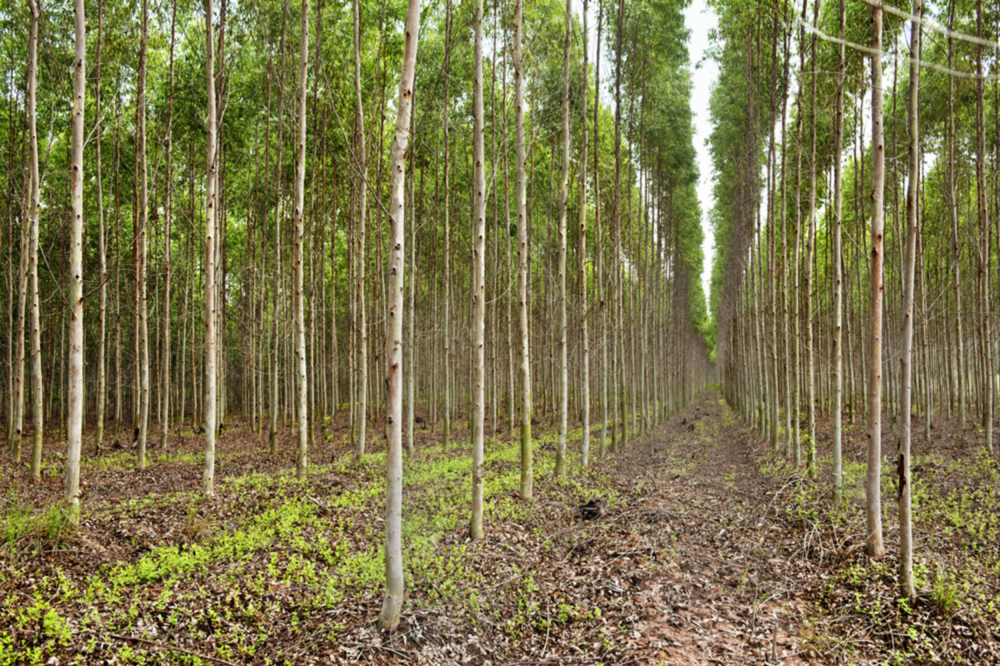

Services we offer!
- Plants for the future!! : We provide seeds and soil to those who wish to grow a sapling of their own but are unable to make the arrangements to start. Anyone could do so by filling out a form of interest. We love to see growth and change and so all those tending to their plants form a plant community and send weekly updates on themselves and their plants! This is completely free of cost and a great way to form relationships and alliances with fellow ciizens of the world!
- The Bi-Annual Plantgram!: This is a Bi-Annual Plantgram wherein 100% of the proceeds go to local nurseries and the plants adopted from them are planted in a reserve with the goal of reaching 10000 plants this year, to help lower the carbon dioxide levels in the air and to purify the air for residents.

- The Plan(t)s for the Future blog! : The Plan(t)s for the Future blog is not only aimed at spreading more knowledge and awareness of how one can contribute and of interesting information about ecology, but also serves as a space for writers to showcase their writing. We would love to hear what you have to say! Watch this space for more information.